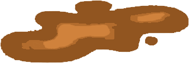

<!DOCTYPE html>
<html lang="en">
<head>
  <meta charset="UTF-8">
  <title>shot the shit~</title>
  <script>
    document.addEventListener('click', (e) => {
      // 创建番茄元素
      const tomato = document.createElement('div');
      // 🍅
      tomato.innerHTML = '💩';
      Object.assign(tomato.style, {
        position: 'absolute',
        left: `${e.pageX - 15}px`,
        top: `${e.pageY - 15}px`,
        fontSize: '30px',
        transition: 'transform 0.2s',
        pointerEvents: 'none'
      });

      // 初始状态
      document.body.appendChild(tomato);
      let rotation = 0;
      let velocity = 0;
      const startY = e.pageY;

      //播放音频
      const audio = new Audio('./music/shit.mp3');
      // 监听 canplay 事件，确保音频加载完成后播放
      audio.addEventListener('canplay', () => {
        audio.play()
          .then(() => console.log('音频开始播放'))
          .catch(error => console.error('播放失败:', error));
      });


      // 动画逻辑
      const animate = () => {
        velocity += 0.03; // 重力加速度
        rotation += 5; // 旋转速度
        const currentY = parseFloat(tomato.style.top) + velocity;

        tomato.style.transform = `rotate(${rotation}deg)`;
        tomato.style.top = `${currentY}px`;

        // 结束条件：超过坠落距离或页面底部
        if (currentY < startY + 300 && currentY < window.innerHeight - 50) {
          requestAnimationFrame(animate);
        } else {
          // 替换为破碎番茄图片
          tomato.innerHTML = '';
        }
      };

      requestAnimationFrame(animate);
    });

    // 图片预加载
    const img = new Image();
    img.src = 'broken_tomato.png';
  </script>

  <style>
    body{
      background-image: url("./images/wl.png");
    }
  </style>
</head>
<body>

</body>
</html>
